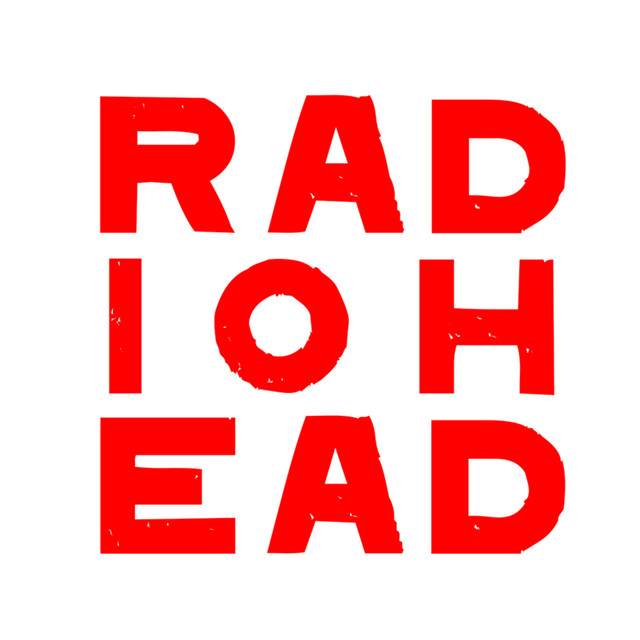

Rock Alternativo / Experimental
Radiohead
Banda britanica formada en 1985 que redefinio los limites del rock. Desde el britpop de Pablo Honey hasta la electronica experimental de Kid A, Thom Yorke y compania nunca dejaron de evolucionar, influenciando a generaciones de musicos.
Album representativo
OK Computer (1997)